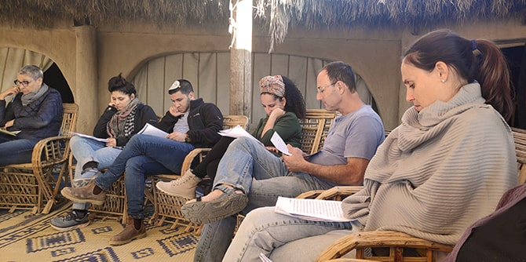

חאן בארותיים, סמוך לניצנה ולגבול מצרים ניחן ביתרון בולט, לצד נוף המדבר הבתולי ולצד השקט: הקליטה הסלולרית בו מוגבלת מאוד. ואכן, עמיתות ועמיתי מחזור ד', המצויים בתחילת המסע המשותף אל המנהיגות החברתית, ניצלו עד תום את הדומייה המדברית, שכן נושא המיבדד היה "השראה והתפעלות".
הנחת היסוד של מארגני המיבדד הייתה שהיכולת לשאוב השראה ולהתפעל בכנות מסגולותיו של זולתנו ניתנת להילמד. לא זו אף זו: היא תנאי למנהיגות ראויה. ודוק: מרכיב הכנות הוא חלק בלתי נפרד מהליך שאיבת ההשראה, שכן אין אדם מוליך שולל את לבו שלו עצמו.
תנו דעתכם: קבוצה שאנשיה הכירו זה את זה חודשיים בלבד לפני המיבדד נדרשת להתכנס לתוככי בועת אינטימיות הכרוכה כמעט בהכרח בעיסוק בנושא שלפנינו. ואכן, חאן בארותיים שמשמש עוגן קבוע למיבדדים של מרכז מנדל למנהיגות בנגב, לא אִכזֵב גם הפעם.

לא רק מיהו האדם שנוכח בלבך מתוך שבחרת בו להיות שם, ואשר דמותו מכוונת את פעולותיך, אורחותיך ומחשבותיך, כי אם גם מהן סגולותיו ומהי טיב הזיקה בין סגולותיו של האדם אשר מהווה עבורך מקור להשראה ולהתפעלות ולאמון וללמידה לבין סגולותיך שלך – אלה הן רק חלק מן השאלות שמיבדד מעין זה מחייב את העמיתים להציב לנגד עיניהם.
מסקנות המיבדד היו שאין מנהיג יכול להיעשות מה שהוא, אם אין לבו פנוי להכיל אנשי מופת שיכוונו את מחשבותיו או את הלכי רוחו. לא זו בלבד שהיכולת לשאוב השראה ולהתפעל היא תכונה הכרחית למנהיג, אלא שהיא ניתנת להילמד.
מיבדד מעין זה יש לו תוצרי לוואי מובהקים: תהליכי אמון בין חברי הקבוצה מואצים ומתגבשים, חוויות עמוקות (כמו לילה קר מדי ושמיכה דקה מדי לצד הליכה עם עלות השחר להתבוננות בשיחי המדבר ובאבניו) נצרבות בתודעה המשותפת.
ולא דיברנו עוד על החברות.
ועל ההנאה.
{kind=link}